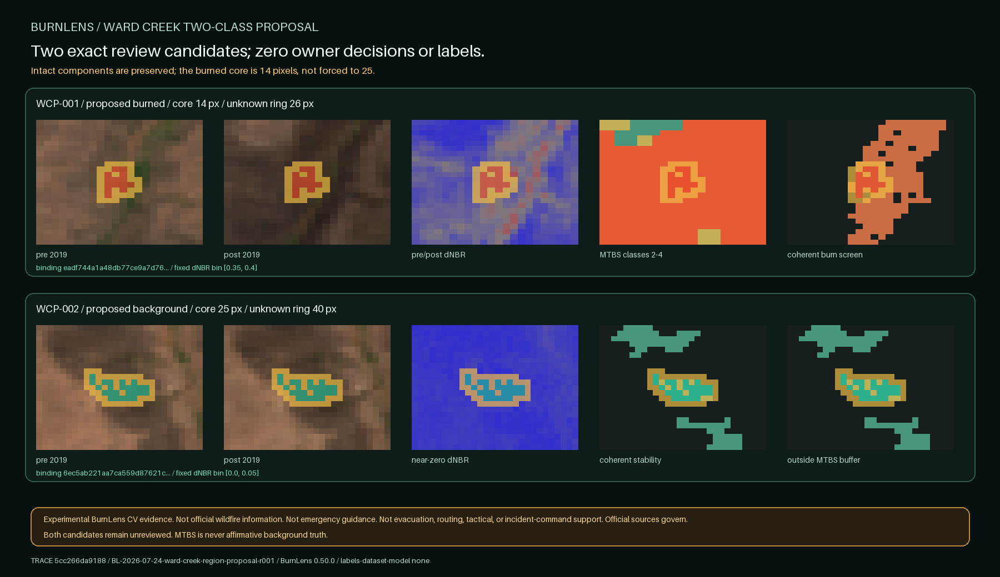

BURNLENS / PHASE TWO / ISSUE #554 / U05
Two Ward Creek regions are proposed; neither is a label.

Exact candidates
| ID | Proposed class | Core pixels | Gap from 25 | Unknown ring | Binding SHA-256 | Raster |
|---|---|---|---|---|---|---|
WCP-001 | burned | 14 | -11 | 26 | eadf744a1a48db77ce9a7d76ca222cdfa4df6c0f8f19752aa61a4184b17ed735 | raster |
WCP-002 | background | 25 | +0 | 40 | 6ec5ab221aa7ca559d87621c1ea3817e864530dd12beda5b85c845d4573159dd | raster |
Why the burned core has 14 pixels
Never clip, pad, merge, or expand a component to force the target. The burned core is 14 pixels because it is the nearest eligible intact component.
The 25-pixel value is a selection target, not permission to alter evidence geometry.
Conjunctive routes
Burned: Eligible exact-pair pixels; transferred coherent four-signal burn screen; MTBS dNBR6 classes 2-4 corroboration.
Background: Eligible exact pre/post pixels; the frozen four-signal near-zero stability screen transferred without tuning; at least seven stable neighbors of nine; outside the complete native MTBS class 1-6 domain plus 60 meters. No signal is sufficient alone.
Boundaries
- The fixed spectral rules, dNBR bins, component target, and tie-break are evidence-coherence rules, not universal burn or severity thresholds.
- The burned core has 14 pixels / 0.56 hectares; BurnLens preserves that intact component instead of forcing the 25-pixel target.
- MTBS classes 2-4 and paired optical change are proposal evidence, not independent ground truth.
- The background proposal shows stability during the exact fire-window pair outside the conservative MTBS-domain buffer; it does not prove land was never burned.
- Only one burned and one background proposal are created; owner review and every non-owner promotion gate remain absent.
PROPOSE_EXACT_WARD_CREEK_TWO_CLASS_REGIONS_KEEP_OWNER_REVIEW_AND_PROMOTION_CLOSED
P2O4-T39-U06 must build one exact two-candidate owner yes/no/uncertain batch bound to these proposal and raster hashes.
No ground truth, owner decision, accepted label, dataset, split, baseline, model, metric, accuracy, field validation, official status, endorsement, emergency suitability, or operational readiness exists.
Trace: commit 5cc266da918862106ed225d52a0f2d809c132954 / run BL-2026-07-24-ward-creek-region-proposal-r001 / U04 acf5b02c314b7dfdee94d8709323117f24e1966042818c37ef7431085813933c / BurnLens 0.50.0.